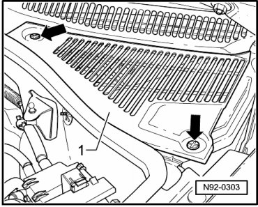
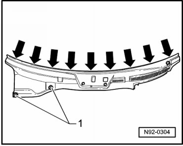

Cowl Moulding / Trim: Service and Repair
Windshield Wiper System
Plenum Chamber Cover, Removing
- Release the retainers - arrows - of the plenum chamber cover by turning them 90°.

- Carefully lift cover - 1 - slightly until harness connector for Sensor for air quality (G238) can be disconnected.
- Remove the cover.
• Plenum chamber cover is inserted below windshield in a guide rail.
• For reasons of clarity, illustration shows plenum chamber already removed.
- Loosen twist locks - 1 - of cover by a 90° turn.

- Carefully unclip plenum chamber cover upward - arrows -.
Windshield Wiper System
Plenum Chamber Cover, Installing
- Install plenum chamber cover in reverse sequence.